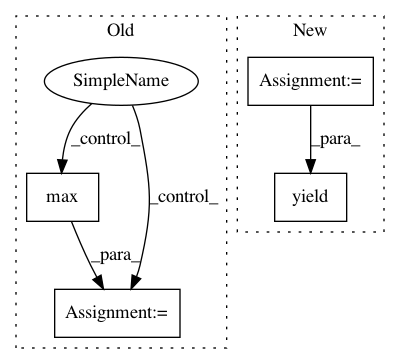

8b5a8bedaeb5e8bc35878d7ae39430a5c285c9ec,calamari_ocr/ocr/datasets/abbyy_dataset/dataset.py,AbbyyDataSet,_load_sample,#AbbyyDataSet#Any#Any#,68
Before Change
if self.mode == DataSetMode.EVAL or self.mode == DataSetMode.TRAIN:
text = sample["format"].text
if text_only:
return img, text
if self.mode == DataSetMode.TRAIN or self.mode == DataSetMode.PREDICT:
img = np.array(Image.open(image_path))
ly, lx = img.shape
// Cut the Image
img = img[line.rect.top: -ly + line.rect.bottom, line.rect.left: -lx + line.rect.right]
// add padding as required from normal files
img = np.pad(img, ((3, 3), (0, 0)), mode="constant", constant_values=img.max())
Binarize Image
if self.binary:
img = img > 0.9
return img, text
def store_text(self, sentence, sample, output_dir, extension):
After Change
if text_only:
yield cut_img, text
else:
if self.mode == DataSetMode.TRAIN or self.mode == DataSetMode.PREDICT:
ly, lx = img.shape
// Cut the Image
In pattern: SUPERPATTERN
Frequency: 3
Non-data size: 4
Instances
Project Name: Calamari-OCR/calamari
Commit Name: 8b5a8bedaeb5e8bc35878d7ae39430a5c285c9ec
Time: 2019-04-08
Author: wick.chr.info@gmail.com
File Name: calamari_ocr/ocr/datasets/abbyy_dataset/dataset.py
Class Name: AbbyyDataSet
Method Name: _load_sample
Project Name: etal/cnvkit
Commit Name: 203ed6d1fda8de579c2bf311e5890dca05c14985
Time: 2016-12-10
Author: eric.talevich@gmail.com
File Name: cnvlib/target.py
Class Name:
Method Name: shorten_labels
Project Name: shubhomoydas/ad_examples
Commit Name: 1799d797fa39516d94208137e586c09c003a4763
Time: 2018-04-02
Author: smd.shubhomoydas@gmail.com
File Name: python/common/timeseries_datasets.py
Class Name: TSeries
Method Name: get_shingles